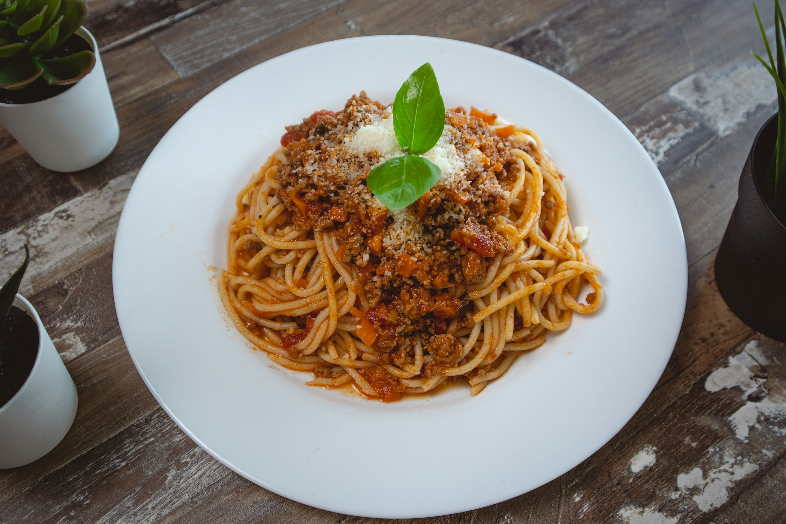

Spaghetti Bolognese

Description
A classic Italian dish featuring a rich and hearty meat sauce served over perfectly cooked spaghetti.
Ingredients:
- 1 lb ground beef
- 1 onion, diced
- 2 cloves garlic, minced
- 1 can (28 oz) crushed tomatoes
- 2 tablespoons tomato paste
- 1 teaspoon dried oregano
- Salt and pepper to taste
- 1/2 cup red wine (optional)
- 1 lb spaghetti
- Freshly grated Parmesan cheese for serving
Steps:
- In a large skillet, brown the ground beef over medium heat.
- Add diced onions and minced garlic, cooking until softened.
- Stir in crushed tomatoes, tomato paste, oregano, salt, and pepper.
- Optionally, add red wine for extra flavor.
- Simmer the sauce for 20-30 minutes, allowing the flavors to meld.
- Meanwhile, cook spaghetti according to package instructions.
- Serve the Bolognese sauce over the cooked spaghetti and sprinkle with Parmesan cheese.